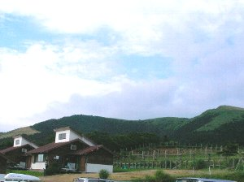
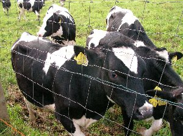
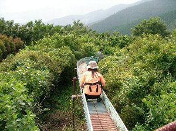
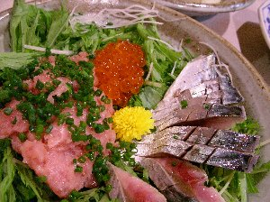
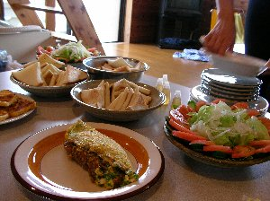
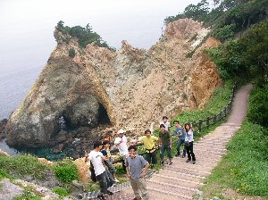

夏キャンプ | 2006年7月末 企画：Ryuuさん |
|---|---|
| 暑い夏を涼しい高原で過ごそう！ 目指せアルプスの少女！ って言うことで、伊豆の仁科峠近くにある「高原の家」に行ってきました。 ここはキャンプと言うよりも、コテージを借りて過ごすタイプです。 まずは9名で静岡を出発。 本日は土肥でお昼を食べてから、高原の家に向かいまったり過ごす計画です。 土肥到着はちょうどお昼。 真夏の太陽が照りつける伊豆ですから、海水浴客で溢れています。 お昼は海鮮食事処に決定〜 皆がお刺身を頼む中で、私は穴子丼を注文。 大きな穴子で美味しかった♪ コテージで早くまったりしたくて、早々に夕飯の買い物を近くのスーパーで。 もちろんお酒も買いました。 買った食材を見ていると、夕食は期待できそうです。 | |
|  ココが高原の家（ちと分かりにくいか） |  牛さん一杯〜 |
| 14時過ぎぐらいには、現地に到着。 標高が高いので（800m位かな？）風が気持ちいいです。 周りは牧場ですから、コテージと相まってまさしく高原の装いです。 非常に眠たかった私とアル兄は、畳の部屋でお昼寝。 窓からの風が冷ややかで、天然クーラーのようです。 起きたら、皆はソフトクリームを食べに出掛け居なかったので、一人でお散歩に出発。 牧場の囲い越しに、「ルールルル〜〜」なんて言ってたら、凄い勢いで牛が集まりだしてしまい、びっくり！ さらに牛が、ホースで水を撒く様な勢いでションベンをし始めるし。 | |
|  先の見えないローラー滑り台 |  縄のトンネルだー |
| そのまま管理棟の方に歩いて行ったら、皆がまったりおしゃべり中だったので、一緒にアスレチックをやり始めました。 丸太を登ったり、ロープを伝わったりと、種類豊富なアスレチックを1時間以上やっていたでしょうか？ コース通り廻るとその位になりますよ。 以外にも楽しく、夢中になってやってましたね。 最後に長いローラースライダーで締めました。 さて、コテージに帰り、夕食の準備開始。 と、言っても皆がやってくれている為に、あまりやる事がありません。 いづみさんに教わりながら、草（？）でわらじを編んでました。（ダメじゃん。いや、ちょっとは手伝いましたよ） 夕食は、メニューが多すぎて覚えきれませんでした。 アイアン君が遅れての到着でしたが、早速夕食の準備に取り掛かって頂き、ありがとうです。 いつに無く豪華な夕食です。美味しかった〜。 食べるときは皆無口で、ガッツいて食べていました。 それ程に美味しい。 | |
 「さあー、長い足を見てくれー！」 |  「よいせっ」 |
| メインの夕食が終わったら、のんびりとお酒タイム。おしゃべりをしながら。テラスでランタンの灯を眺めながら。 それぞれの時間をのんびりと過ごしていたら・・・「夜のローラースライダーへ行こう」 てな事になり、酔いも手伝ってはしゃぎながら、外灯一つ無い真っ暗なローラースライダーへ。 ぼんやりと見える滑り台の先は、暗闇の中に続く線路の様で、昼間滑っているから分かっているとはいえ、先の見えない滑り台は・・・・楽しい♪ 終着点が分からないのが怖いけど、それがまた楽しい。 近くに人が居たら、暗闇から「わー〜〜〜〜」「うぉ〜〜〜」なんて聞こえてきて、不気味だったでしょう。 ひとしきり遊んだ後は、コテージ前の草むらにひっくり返り、星空の観測。 ここで、IさんとMさんが、「ほら! あの星動いてる！ おかしいって！ UFOだよ！」と興奮されている様子。 周りの誰もが、錯覚だ、気のせいだ、目がおかしい、と言ってもなかなかUFO疑惑は拭えなかった。 星空は、夏だし薄く曇っていたから そんなに見えないはずだけど、凄く綺麗に見えて、流れ星まで観測出来ました。 ここに秋とか冬来たら、凄く見えるんでしょうね〜〜 | |
 夕食の準備です |  夕食の一品です。美味そうですね。 |
| 星空観測が終わったら、また飲みとおしゃべりが始まり、それは深夜まで続きました。 私は12時を過ぎた辺りで眠くなり（いつもの事だが）、お先に睡眠。 遅い人は3時までおしゃべりしていたとか。 さて、翌朝は曇り。高原に霧が掛かっているようで、幻想的な風景です。 朝食はパンと、オムレツ等、豪華な朝食です。今回コック役を務めて頂き、ミカちゃん、アイアンくんありがとうございます。 もちろん他の手伝って頂いた方も。 朝食をゆっくり取って、西伊豆海岸へ。 単なる観光です。海を眺めたりして。 その後は、帰り道にある日帰り温泉へ、昼飯と温泉を兼ねて行きました。 やはり、まったりと過ごし、皆の早めの帰宅を考え、その場で解散となりました。 | |
|  朝食。朝から豪華だなー |  西伊豆で記念写真 |
| 色々な意味で楽しい旅行でした。キャンプと呼べるかどうかは別として、自分たちで食事を用意して、おしゃべりして過ごすって良いですよね。 コテージの雰囲気も最高でした。 企画者Ryuuさん、サンクスです。また、穴場が有ったら教えて下さい。 写真：コメント ｂｙ べっしー | |